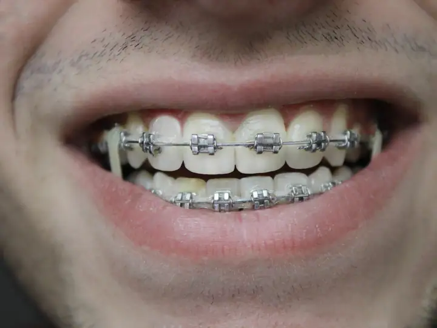
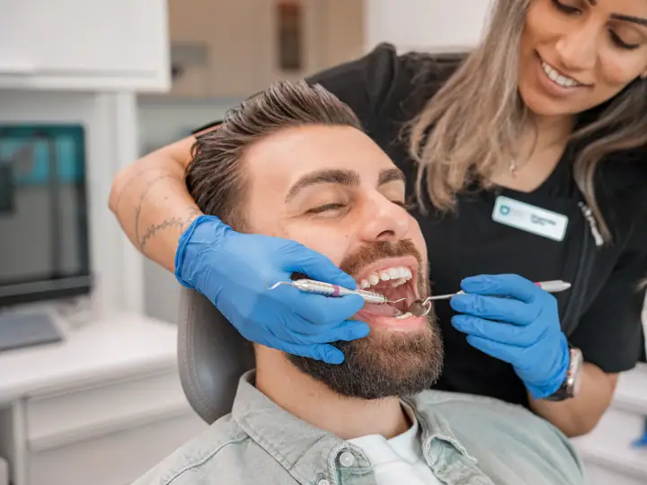
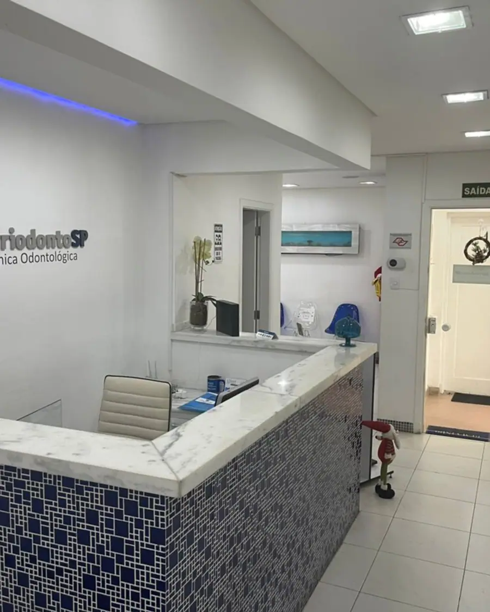
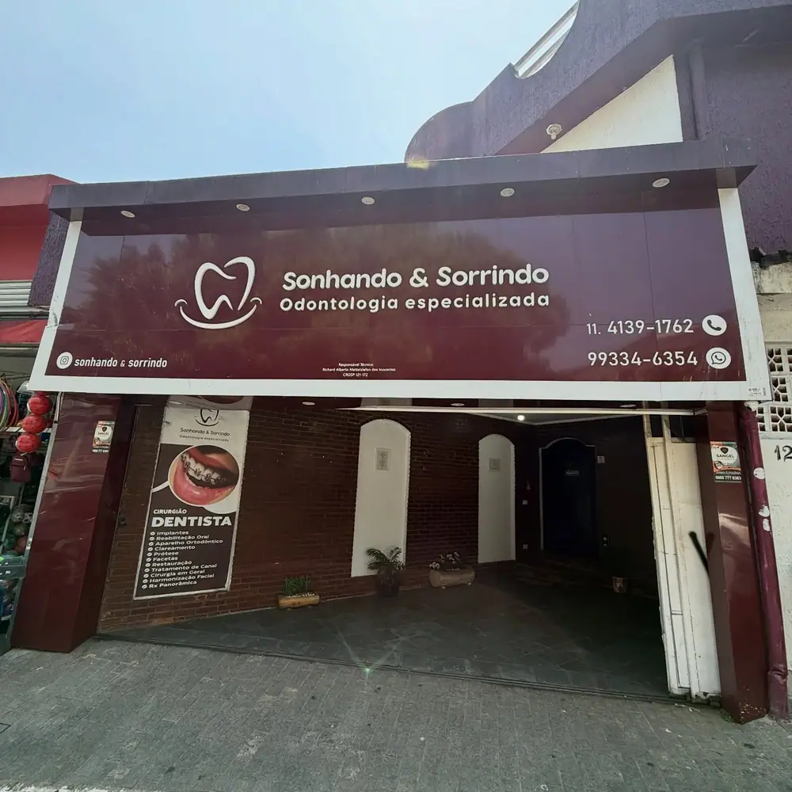
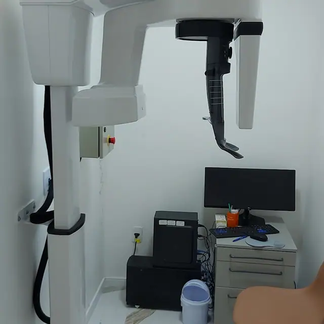
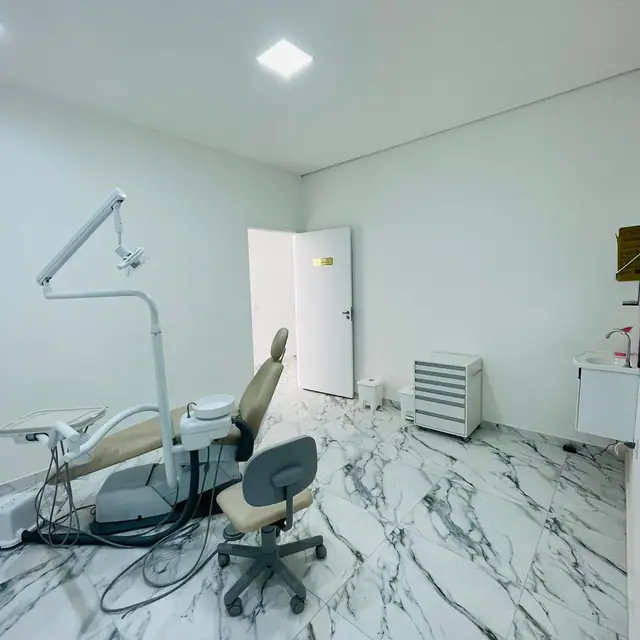
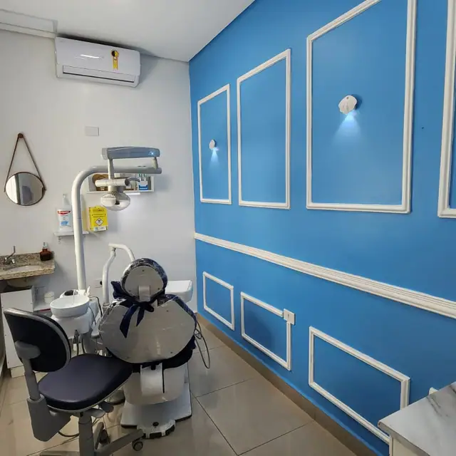

01
Extração e cirurgia de siso
Extrações simples e cirurgia de siso com planejamento pelo raio-X e orientação completa para a recuperação.
Agendar avaliaçãoOdontologia especializada no Jardim Saint Moritz · Taboão da Serra
Referência em cirurgia de siso, com raio-X panorâmico na própria clínica, implantes, protocolo, facetas e aparelho. Tudo com uma equipe que explica cada passo.
1º lugar · Melhores do Ano 2026 em Taboão da Serra
Escolha o tratamento e fale direto com a equipe da Sonhando & Sorrindo. A mensagem já vai pronta no WhatsApp.
Extrações simples e cirurgia de siso com planejamento pelo raio-X e orientação completa para a recuperação.
Agendar avaliação
Reposição de dentes perdidos com implantes, devolvendo firmeza para mastigar e segurança para sorrir.
Agendar avaliação
Próteses fixas e removíveis para recuperar a mastigação, a fala e a confiança no sorriso.
Agendar avaliação
Ortodontia para alinhar os dentes e corrigir a mordida, com manutenção e acompanhamento até o fim.
Agendar avaliação
Facetas em resina ou porcelana para corrigir cor, forma e tamanho dos dentes com resultado natural.
Agendar avaliação
Dentes mais claros com técnica indicada para o seu caso, depois de avaliar a saúde da gengiva e do esmalte.
Agendar avaliação
Consulta completa, limpeza, restaurações e prevenção. É por aqui que todo tratamento bem-feito começa.
Agendar avaliação
Endodontia para salvar o dente e acabar com a dor, com anestesia e acompanhamento em cada sessão.
Agendar avaliação
Em 2026 a Sonhando & Sorrindo recebeu o prêmio Melhores do Ano de Taboão da Serra na categoria dentista. No Google, são 59 avaliações, todas com nota máxima.
Sem complicação: você conversa, entende o seu caso e só então decide.
Conte o que está sentindo ou o que quer melhorar no sorriso. A equipe responde e encontra o melhor horário para você.
O dentista examina, conversa com você e explica as opções de tratamento, com o plano e as etapas por escrito.
Você decide com calma e é acompanhado em cada sessão, até o resultado final.
Segunda a sexta: 09h–18h30 · Sábado: 09h–14h
Veja mais no Instagram @sonhandoesorrindo.




Depoimentos reais de pacientes publicados no Google Maps.
“Quero parabenizar toda a equipe da clínica pelo excelente atendimento e profissionalismo. Desde a recepção até o atendimento odontológico, fui tratada com muito cuidado, atenção e respeito. A estrutura é impecável, os profissionais são competentes e atenciosos, e eu me senti segura em todas as etapas do tratamento.”
“Dentistas top! Preço ótimo. Estava com sensibilidade em um dente com água gelada e eles resolveram! Também removi os 4 sisos, ótimo cirurgião, não senti nada e não doeu nada. Recomendo, super atenciosos e profissionais!”
“Minha mãe foi muito bem atendida e está muito feliz com seu protocolo inferior. Meu filho faz tratamento ortodôntico também. Ótimos resultados na clínica. Equipe nota 10.”
“Super recomendo essa clínica, fui conhecer e por aqui fiquei. Hoje estou fazendo tratamento ortodôntico e estou muito satisfeita com o resultado que estou vendo. Atendimento maravilhoso, valores super acessíveis.”
“Gostei muito do atendimento, foram muito atenciosos! A recepcionista é muito carinhosa e atenciosa. Tinha receio de anestesia, mas aqui foi bem diferente de outros lugares: não senti nada.”
Não achou sua dúvida? Pergunte direto para a equipe no WhatsApp.
A Sonhando & Sorrindo fica na R. Madre Teresa de Calcutá, 124, Jardim Saint Moritz, em Taboão da Serra (SP), CEP 06787-545. Pelo botão "Traçar rota" nesta página você abre o caminho direto no Google Maps.
A clínica atende segunda a sexta, das 09h às 18h30; sábado, das 09h às 14h. Aos domingos fica fechada. O agendamento é feito pelo WhatsApp.
É só chamar no WhatsApp (11) 99334-6354 pelo botão "Agendar avaliação". A equipe responde, tira suas dúvidas e marca o melhor horário para a sua avaliação.
Extração e cirurgia de siso, Implantes dentários, Próteses dentárias, Aparelho ortodôntico, Facetas e lentes de contato, Clareamento dental, Avaliação e clínico geral e tratamento de canal. O tratamento indicado para você é definido na avaliação.
Nem sempre. A extração é indicada quando o siso não tem espaço, nasce torto, causa dor, inflamação ou atrapalha os outros dentes. O raio-X mostra a posição dele e ajuda a decidir.
O procedimento é feito com anestesia local, então você não sente dor durante a cirurgia. Nos dias seguintes pode haver um leve incômodo, controlado com as orientações e a medicação indicadas pelo dentista.
Depende de quantos dentes faltam e da saúde da boca e do osso. Existem próteses removíveis, fixas e as fixas sobre implantes, como o protocolo. A indicação é feita depois da avaliação.
Depende de cada caso, mas a maioria dos tratamentos leva entre um e três anos. Na avaliação o ortodontista mostra uma estimativa para o seu sorriso.
Agende sua avaliação na Sonhando & Sorrindo em poucos minutos pelo WhatsApp.